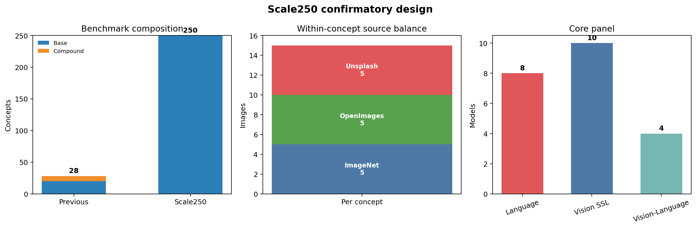
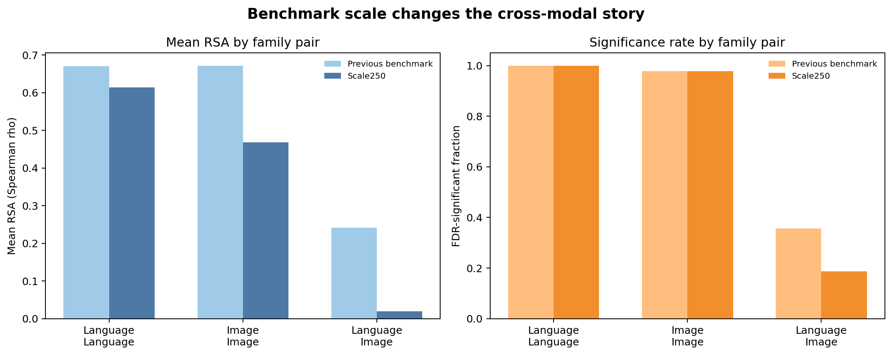
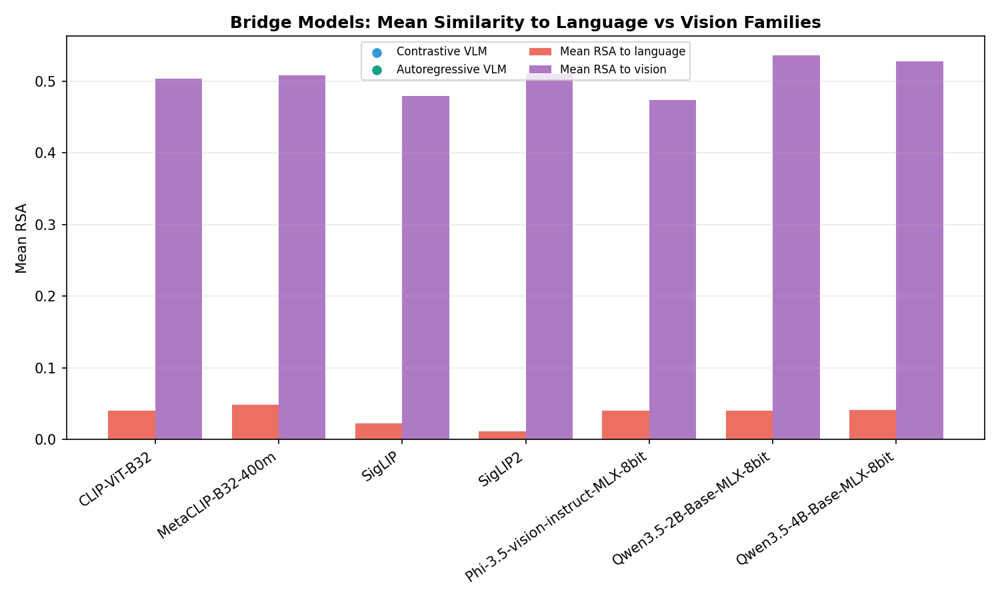
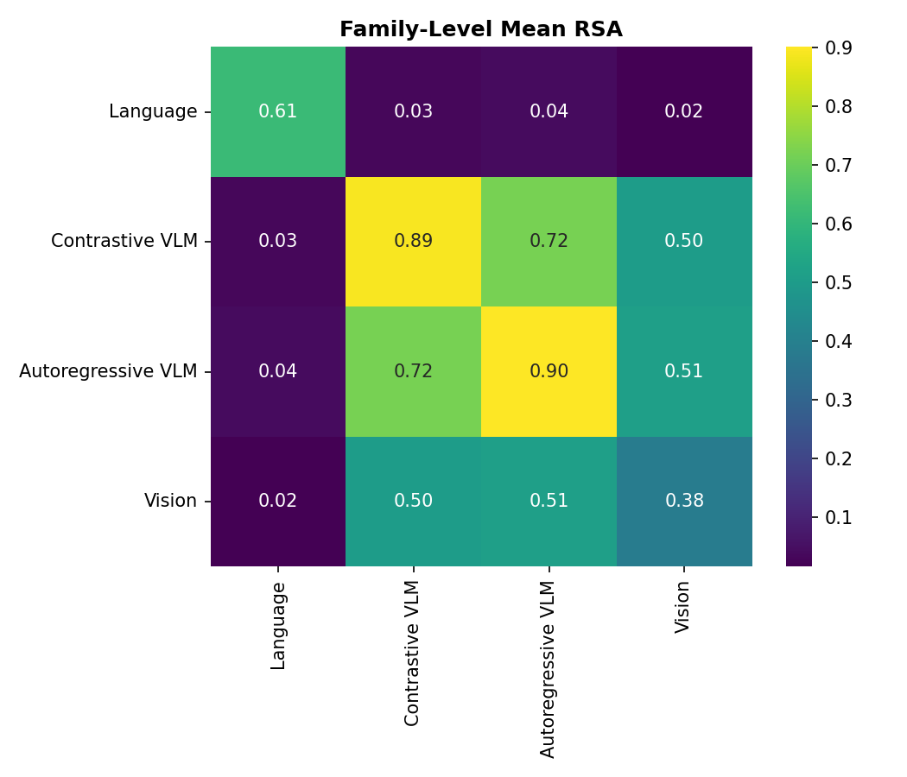
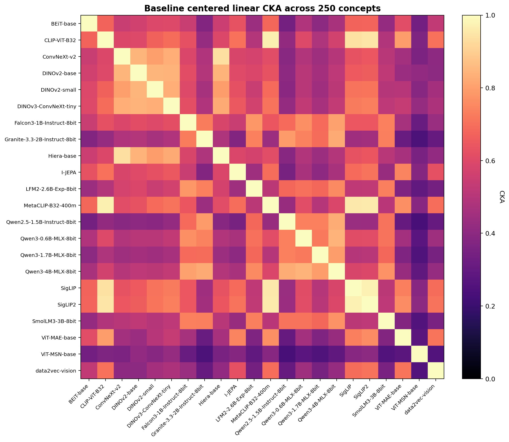
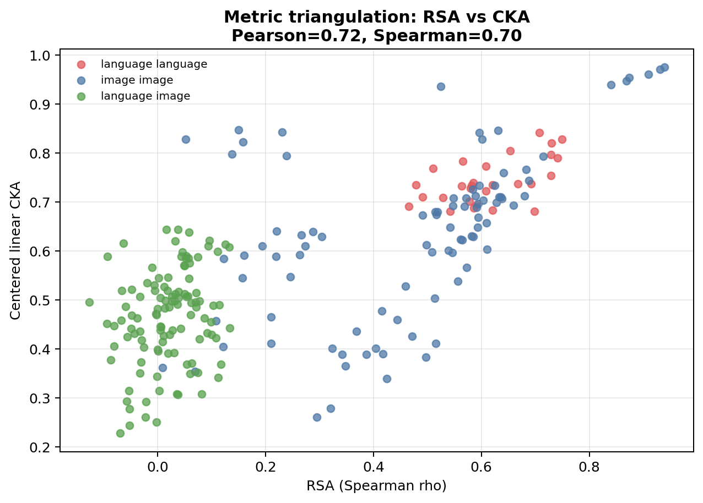
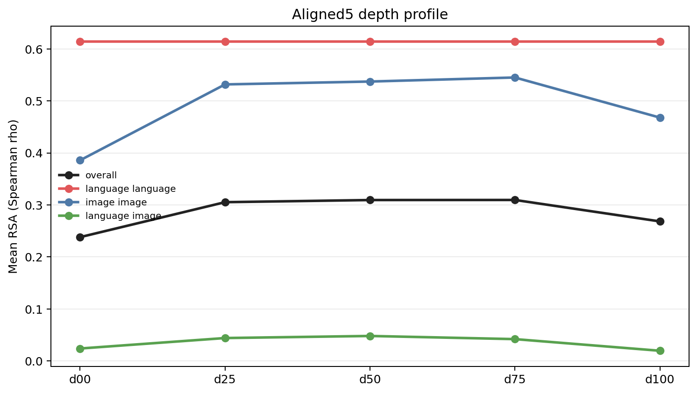
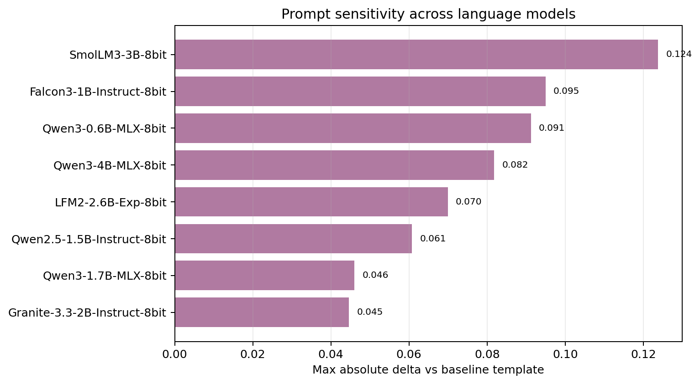
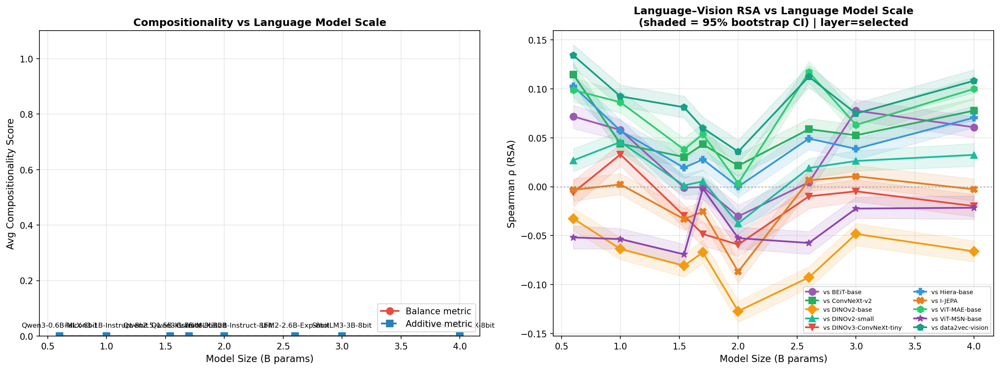

March 2026
The Platonic Representation Hypothesis (PRH) proposes that
sufficiently capable models trained on different modalities converge
toward a shared representational geometry. Earlier local evidence from
this project suggested moderate language-image agreement, but that
estimate rested on a small prototype benchmark. This paper replaces that
prototype with a confirmatory 250-concept benchmark while holding the
22-model panel fixed: 8 language models, 10 self-supervised vision
models, and 4 contrastive vision-language encoders evaluated through
their image towers. Each concept contains 15 images with strict
within-concept source balance (5 ImageNet, 5 Open Images, 5 Unsplash).
The analysis combines a selected-layer baseline, an aligned five-layer
confirmatory pass, image bootstrap confidence intervals, Mantel
permutation tests with Benjamini-Hochberg FDR correction, prompt
sensitivity analysis, and metric triangulation with linear Centered
Kernel Alignment (CKA). To answer the strongest architecture-scope
critique, the paper also adds a secondary 25-model extension with three
autoregressive VLMs: Qwen3.5-2B, Qwen3.5-4B,
and Phi-3.5-vision. The benchmark scale-up changes the
answer materially. In the previous local release, language-image RSA
averaged 0.2418; in the new benchmark it drops to 0.0199, while
language-language agreement remains strong (mean 0.6143) and image-side
agreement remains substantial (mean 0.4681). CKA preserves the same
qualitative ordering of family structure and agrees with pairwise RSA at
Pearson 0.7229 and Spearman 0.7050. The contrastive vision-language
encoders cluster strongly with the image side (vision-VLM mean RSA
0.5003; VLM-VLM mean RSA 0.8938) and only weakly with language models
(language-VLM mean RSA 0.0308). The new autoregressive VLMs show the
same pattern even more clearly: mean RSA to vision is 0.5122 versus
0.0404 to language, with a vision-minus-language gap of 0.4718.
Aligned-layer analysis shows that mean pairwise RSA peaks in mid-to-late
layers (0.3096 at d75) rather than the terminal selected
layer (0.2683), but selected-layer baseline and aligned5 conclusions are
nearly identical at the headline level. A scaling analysis across
0.6B-4B language models shows no monotonic size law for cross-modal
alignment (Spearman size vs. mean vision RSA = -0.0952). The main
contribution of the paper is therefore a benchmark correction: on this
local panel, small benchmarks materially overstate cross-modal geometric
convergence. What survives the stronger measurement regime is robust
within-family structure, vision-anchored bridge models across both
contrastive and autoregressive VLMs, and a mid-layer depth effect rather
than broad language-image convergence.
Keywords: Platonic Representation Hypothesis, representational similarity analysis, centered kernel alignment, cross-modal convergence, benchmark design, layer alignment
The Platonic Representation Hypothesis (PRH) asks whether models trained on different modalities converge toward a shared internal geometry because they are all modeling the same world. In its strong form, the hypothesis predicts that modality should matter less and less as capability grows: a language model and a vision model, trained on different data with different objectives, should still come to organize concepts similarly.
That is a stronger claim than task transfer or interface compatibility. It is a claim about inevitability in representation itself. The relevant question is therefore not whether some cross-modal signal can be detected on a favorable benchmark, but whether that signal survives a harder and more balanced measurement regime.
The previous paper, Where Representations Diverge, got the argument into approximately the right place but on an insufficiently strong benchmark. It showed stronger within-family convergence than cross-modal convergence, and it suggested that multimodal bridge models looked more vision-like than modality-neutral. But the underlying benchmark was small: 20 base concepts for RSA plus 8 compounds, with looser source construction and less separation between confirmatory and exploratory analysis.
This paper is therefore not a cosmetic update. It is a benchmark replacement. The model panel stays fixed at 22 models in the core confirmatory benchmark so that the experimental work is done by measurement design rather than by a new roster. The primary concept benchmark expands from 20 base concepts to 250 base concepts, compounds are removed from the confirmatory set, images are balanced within concept across three sources, and layer-wise and robustness analyses are predeclared rather than added after the fact.
The most important claim of this paper is narrower than the strongest reading of PRH. It is not “we have disproved Platonic convergence in general.” It is: when the same local 22-model panel is measured on a much broader and more balanced benchmark, the apparent strength of cross-modal convergence drops sharply.
That framing matters. A small benchmark can produce a qualitatively correct intuition but still materially overestimate its effect size. The purpose of the new experiment is to identify what survives once the most obvious measurement weaknesses are removed.
Relative to the previous release, the new experiment makes six concrete upgrades:
The result is more conservative than the earlier paper, but also more credible.
The paper is organized around five questions:
The closest conceptual antecedent is the Platonic Representation Hypothesis of Huh et al. (2024), which argues that sufficiently capable language and vision models exhibit increasing geometric agreement across modalities. That work is valuable because it turns a philosophical intuition into an empirical one: convergence becomes a measurement problem rather than a slogan. The present paper addresses a narrower question. Instead of asking whether convergence can be shown on large curated setups, it asks how much of the effect survives when a small local benchmark is replaced by a much broader confirmatory one.
Our measurement frame sits inside the broader literature on representational similarity. RSA (Kriegeskorte et al., 2008) compares the relational geometry of concept representations rather than their raw coordinates, which makes it especially useful when embedding dimensions differ across model families. But RSA is not the only lens. Canonical-correlation approaches such as SVCCA (Raghu et al., 2017) and PWCCA-style analyses (Morcos et al., 2018) ask whether two representations span similar subspaces even when their coordinates are not directly aligned. CKA (Kornblith et al., 2019) adds a kernel-based alternative that is widely used because it is invariant to isotropic scaling and robust to differences in representation width. Reviewers are right to be skeptical of metric monoculture. A claim that rests only on Spearman RSA over cosine-similarity matrices is a weaker claim than one that survives more than one representational comparison family.
This paper therefore treats metric triangulation as part of the contribution rather than an optional appendix. RSA remains the main inferential target because the research question is about shared concept geometry, but linear CKA is used as a second lens over the same concept-by-feature matrices. The point is not to claim that the metrics are interchangeable. They are not. RSA compares rank-ordered similarity structure in representational dissimilarity matrices; CKA compares centered alignment between feature spaces. Agreement between them therefore strengthens trust in the direction of the result, not in any single numeric magnitude.
The bridge-model question also sits in a specific multimodal literature. Contrastive image-language models such as CLIP (Radford et al., 2021) and SigLIP (Zhai et al., 2023) are designed to make language and image embeddings interoperable. But interoperable interfaces do not automatically imply modality-neutral internals. A dual-encoder can align tasks while still preserving strong vision-anchored structure in its image tower. This distinction is central to the present paper because the four vision-language models in the current panel are all contrastive image-language encoders evaluated through their image-side representations.
Finally, this paper contributes to a quieter but important tradition of benchmark correction. Negative or weaker-than-expected results matter when they arise from a stronger measurement regime rather than from degraded engineering. Here the point is not that cross-modal structure disappears. It is that benchmark expansion materially changes its estimated strength. That is scientifically useful even if it is less glamorous than a broad positive claim.
The full experiment is built around a simple contract: keep the model panel fixed, scale the concept benchmark aggressively, and separate confirmatory from exploratory analysis.
Table 1: Confirmatory design contract.
| Component | Current experiment |
|---|---|
| Core model panel | 22 models |
| Model families | 8 language, 10 vision SSL, 4 vision-language |
| Secondary architecture extension | +3 autoregressive VLMs (25 models complete overall) |
| Primary concept set | 250 base concepts |
| Concept design | stratified a priori, 10 strata x 25 concepts |
| Compound concepts in primary set | none |
| Images per concept | 15 |
| Per-concept source balance | 5 ImageNet, 5 Open Images, 5 Unsplash |
| Text templates extracted | baseline3 (t0, t1,
t2) |
| Main layer protocols | selected-layer baseline and aligned5 |
| Bootstrap | 300 draws, 10 images per concept, with replacement |
| Significance test | 3,000-permutation Mantel, BH FDR |
| Secondary metric | linear CKA on concept-by-feature matrices |

The 22-model roster is unchanged from the final local panel used in the previous release. This is deliberate. Keeping the panel fixed lets the benchmark design do the experimental work.
Table 2: Model roster.
| Family | Models |
|---|---|
| Language (8) | Falcon3-1B-Instruct-8bit, Granite-3.3-2B-Instruct-8bit, LFM2-2.6B-Exp-8bit, Qwen2.5-1.5B-Instruct-8bit, Qwen3-0.6B-MLX-8bit, Qwen3-1.7B-MLX-8bit, Qwen3-4B-MLX-8bit, SmolLM3-3B-8bit |
| Vision SSL (10) | BEiT-base, ConvNeXt-v2, DINOv2-base, DINOv2-small, DINOv3-ConvNeXt-tiny, Hiera-base, I-JEPA, ViT-MAE-base, ViT-MSN-base, data2vec-vision |
| Vision-Language (4) | CLIP-ViT-B32, MetaCLIP-B32-400m, SigLIP, SigLIP2 |
The language models span roughly 0.6B-4B parameters. The vision side deliberately spans multiple self-supervised paradigms. The vision-language models require a specific caveat: the current panel contains contrastive dual-encoder models, and the analysis uses their image towers. Any claim about bridge-model behavior in the core 22-model analysis is therefore scoped to contrastive image-encoder-side representations, not to autoregressive interleaved VLMs in general.
To answer that scope critique directly, the paper adds a secondary
architecture extension on the same 250-concept benchmark with three
completed autoregressive VLMs: Qwen3.5-2B-Base,
Qwen3.5-4B-Base, and Phi-3.5-vision-instruct.
These models are not folded into the aligned5 analysis; they are used as
a selected-layer architecture stress test against the existing
bridge-model story. The comparison therefore asks a narrow question:
when we add native autoregressive multimodal models, do they sit closer
to language, closer to vision, or in between?
The new benchmark is not a larger random sample. It is a structured
benchmark. The manifest in data/data_manifest_250.json
specifies:
base250)The 10 target strata are:
Each concept has exactly 15 accepted images. The source policy is within-concept balanced: 5 ImageNet, 5 Open Images, and 5 Unsplash images per concept, with no substitution allowed. That is a major improvement over the earlier project state because source diversity is now built into the benchmark rather than treated mainly as a post hoc nuisance variable.
Language-side concept embeddings are extracted from short
definitional prompts using the three baseline3
templates:
The concept of {concept}An example of {concept}The meaning of {concept}The selected-layer baseline uses the model’s default terminal representation. The aligned-layer pass uses five standardized depth fractions:
d00d25d50d75d100For image-side models, per-image embeddings are extracted first and aggregated to concept-level representations. Image-level embeddings are cached, which allows image bootstrap and layer analysis without rerunning the forward passes.
For the autoregressive VLM extension, image-conditioned
representations are extracted through the MLX-VLM
get_input_embeddings(...) path after multimodal processor
preparation. The representation used for analysis is the final inserted
image-token embedding aggregated over the image tokens for a single
image, then averaged to the concept level in the same way as the other
image-side models. This path provides one comparable selected-layer
representation per image but does not yet expose a stable cross-family
internal layer stack. The autoregressive VLM extension is therefore
selected-layer only.
For each model:
The primary inferential package has two parts:
We also compute prompt sensitivity from the three extracted templates and run the same robustness package on the aligned5 pass.
RSA is the main analysis because the paper is about shared concept geometry, but we add a second metric to test whether the qualitative ordering survives outside the RSA family. For the selected layer baseline, we build one concept-by-feature matrix per model using the same 250 concept representations used in the RSA analysis. Each matrix is row-normalized across concepts before comparison, and we compute pairwise linear CKA between all model pairs.
This CKA analysis is intentionally used as triangulation rather than as a second significance layer. The inferential package remains tied to RSA, bootstrap, and Mantel tests. The CKA question is qualitative: does the same family structure appear when we compare centered feature spaces rather than ranked similarity matrices?
To make the scale-up interpretable, the new paper compares the current benchmark against the signed previous local release. That earlier release used the same 22-model panel but only 20 base concepts for RSA plus 8 compounds for exploratory analysis. The old and new runs therefore differ mainly in benchmark design, not in model roster.
That comparison is central to this paper. It lets us ask whether the earlier cross-modal story was discovering durable geometry or overfitting a small benchmark.
The first important result is comparative: the new benchmark makes the apparent cross-modal convergence substantially weaker than it looked in the previous paper.
Table 3: Broad family comparison, previous benchmark vs. Scale250.
| Benchmark | Language-Language mean ρ | Image-Image mean ρ | Language-Image mean ρ | Significant pairs |
|---|---|---|---|---|
| Previous local release | 0.6703 | 0.6721 | 0.2418 | 157 / 231 |
| Scale250 baseline | 0.6143 | 0.4681 | 0.0199 | 138 / 231 |

The scale-up does not merely shrink everything uniformly. The strongest change is in cross-modal agreement. Language-image mean RSA drops from 0.2418 in the earlier benchmark to 0.0199 in the new one, and the significant fraction falls from 40/112 to 21/112. That is the clearest indication in the whole project that the earlier small benchmark overstated cross-modal convergence.
At the same time, the scale-up does not erase all structure. Language-language agreement stays high, and image-image agreement stays well above zero. So the new benchmark does not produce a null result. It produces a narrower result: convergence is robust within broad families, but weak across language and image on a large balanced benchmark.
The baseline run in
results/scale250_full/baseline/replication_results.json and
results/scale250_full/baseline/robustness_opt_full/robustness_stats.json
shows clear family structure.
Table 4: Fine-grained pairwise RSA summary for the Scale250 baseline.
| Pair type | Pairs | Mean ρ | Median ρ | Significant after FDR |
|---|---|---|---|---|
| Language-Language | 28 | 0.6143 | 0.5994 | 28 / 28 |
| Vision-Vision | 45 | 0.3827 | 0.4248 | 43 / 45 |
| VLM-VLM | 6 | 0.8938 | 0.8921 | 6 / 6 |
| Vision-VLM | 40 | 0.5003 | 0.5584 | 40 / 40 |
| Language-Vision | 80 | 0.0155 | 0.0149 | 15 / 80 |
| Language-VLM | 32 | 0.0308 | 0.0372 | 6 / 32 |
Three conclusions follow immediately.
First, language models agree strongly with one another. The mean language-language RSA is 0.6143 and all 28 pairs survive FDR correction.
Second, the contrastive vision-language encoders do not behave like modality-neutral bridges. Their image towers agree extremely strongly with one another (mean 0.8938) and strongly with the pure vision models (mean 0.5003), but only weakly with language models (mean 0.0308). On the current evidence, these bridge models are better interpreted as vision-anchored interfaces than as proof of a shared cross-modal geometry.
Third, strict language-vision agreement is weak. The mean is 0.0155, the median is 0.0149, and only 15 of 80 pairs survive FDR correction. The strongest positive pairs in the entire panel are all on the image side:
SigLIP vs SigLIP2: 0.9397CLIP-ViT-B32 vs MetaCLIP-B32-400m:
0.9306MetaCLIP-B32-400m vs SigLIP2: 0.9100The most negative pairs are all cross-modal and modest in magnitude:
DINOv2-base vs
Granite-3.3-2B-Instruct-8bit: -0.1271Granite-3.3-2B-Instruct-8bit vs SigLIP2:
-0.0941DINOv2-base vs LFM2-2.6B-Exp-8bit:
-0.0927The most important post-review extension is architectural rather than statistical. A fair reviewer can object that the original bridge-model interpretation only covered contrastive dual encoders such as CLIP and SigLIP. To test that, the paper adds three autoregressive VLMs on the same 250-concept benchmark and merges them with the 22-model baseline into a 25-model selected-layer panel.
Table 5: Bridge-model family summary after adding three autoregressive VLMs.
| Bridge family | Mean to language | Mean to vision | Mean within family | Mean to contrastive VLM | Vision minus language |
|---|---|---|---|---|---|
| Contrastive VLM (4) | 0.0308 | 0.5003 | 0.8938 | - | 0.4695 |
| Autoregressive VLM (3) | 0.0404 | 0.5122 | 0.9011 | 0.7202 | 0.4718 |


This extension does not rescue a modality-neutral bridge interpretation. It strengthens the opposite one. The three autoregressive VLMs have mean RSA 0.5122 to the vision family and only 0.0404 to the language family, which is effectively the same vision-language gap seen in the contrastive VLMs (0.4718 versus 0.4695). The per-model pattern is also consistent:
Qwen3.5-2B-Base-MLX-8bit: 0.5357 to vision, 0.0399 to
languageQwen3.5-4B-Base-MLX-8bit: 0.5272 to vision, 0.0410 to
languagePhi-3.5-vision-instruct-MLX-8bit: 0.4737 to vision,
0.0403 to languageThe bridge-model result is therefore no longer limited to contrastive image towers. On this benchmark and under a selected-layer extraction regime, both contrastive VLMs and autoregressive VLMs look far more vision-like than language-like. The architecture extension does not answer every multimodal question, but it closes the most obvious criticism of the earlier bridge-model claim.
The main review-driven question is whether the RSA story survives outside the RSA family. The answer is yes at the qualitative level.
Table 6: Broad family comparison under linear CKA.
| Pair type | Pairs | Mean CKA | Median CKA |
|---|---|---|---|
| Language-Language | 28 | 0.7429 | 0.7350 |
| Image-Image | 91 | 0.6338 | 0.6407 |
| Language-Image | 112 | 0.4657 | 0.4766 |
For this CKA summary, the four contrastive VLM image encoders are grouped with the image side, because the extracted representations are image-tower features. Under that definition, the same broad ordering survives: language-language is highest, image-image remains next, and language-image is the weakest category. Pairwise agreement between RSA and CKA over all 231 model pairs is substantial (Pearson 0.7229, Spearman 0.7050), which is exactly what we want from metric triangulation: not identical magnitudes, but the same structural ranking.


The same top families dominate under CKA. The strongest pairs are
again SigLIP vs SigLIP2 (0.9749),
CLIP-ViT-B32 vs MetaCLIP-B32-400m (0.9712),
and MetaCLIP-B32-400m vs SigLIP2 (0.9605). The
weakest CKA pairs still concentrate in cross-modal comparisons involving
weaker language-image alignment, especially around
ViT-MSN-base.
The numeric gap is less stark under CKA than under RSA. That difference is expected rather than concerning. RSA is a rank correlation over similarity matrices; CKA is a centered alignment on feature matrices and is bounded positive in this implementation. The important result is not that the numbers match exactly, but that the qualitative family ordering survives a second metric family.
The aligned5 pass is where the main positive result of the new study appears. The selected-layer headline barely changes between baseline and aligned5, but the depth profile is informative.
Table 7: Mean RSA by aligned depth fraction in the 250-concept run.
| Depth | Overall | Language-Language | Image-Image | Language-Image |
|---|---|---|---|---|
| d00 | 0.2381 | 0.6143 | 0.3859 | 0.0240 |
| d25 | 0.3053 | 0.6143 | 0.5317 | 0.0441 |
| d50 | 0.3094 | 0.6143 | 0.5372 | 0.0481 |
| d75 | 0.3096 | 0.6143 | 0.5450 | 0.0420 |
| d100 | 0.2683 | 0.6143 | 0.4679 | 0.0197 |

This depth pattern matters for interpretation. It says that whatever shared geometry exists in this panel is strongest in mid-to-late aligned layers, not uniquely in the terminal layer. The language-language line stays flat, while image-image and language-image comparisons do the moving.
At the same time, aligned5 does not rescue a strong PRH reading. The selected-layer baseline and selected-layer aligned5 summaries are nearly identical: both have 138/231 significant model-pair results, the mean absolute pairwise shift is only 0.0002, and 210 of 231 pairwise RSA values are unchanged exactly. So aligned layers change where the convergence signal is most visible, not whether the final high-level conclusion changes.
Prompt sensitivity is materially smaller in the new benchmark than in the previous small one, but it is not negligible.
Across the 8 language models in the Scale250 baseline:
By model, the least prompt-sensitive and most prompt-sensitive cases are:
Granite-3.3-2B-Instruct-8bit: 0.0446Qwen3-1.7B-MLX-8bit: 0.0460SmolLM3-3B-8bit: 0.1238
The image-bootstrap confidence intervals are also much tighter than in the previous benchmark:
That improvement matters. The new benchmark is not only harder; it is also more statistically stable. The broader concept set shrinks uncertainty enough that small cross-modal effects can be interpreted more cautiously and more credibly.
The previous paper entertained a tentative scale story. The new benchmark does not support it.
Using the baseline scaling analysis in
results/scale250_full/baseline/scaling/scaling_analysis.png,
the Spearman correlation between language-model size and mean vision RSA
is -0.0952. That is effectively no monotonic scaling law.
The per-model pattern is mixed:
Qwen3-0.6B-MLX-8bit at
0.0455Granite-3.3-2B-Instruct-8bit at -0.0333Qwen3-4B-MLX-8bit improves over the 2B and 1.5B cases,
but not over the 0.6B case
This does not mean size never matters. It means size is not the dominant variable in this local panel once the benchmark is broadened. Architecture family, training data, and objective appear to matter more than raw parameter count.
The methodological improvements over the previous paper are now clear enough to state explicitly.
Benchmark improvements
Inference improvements
Interpretive improvement
The strongest interpretation of the new experiment is not that convergence disappears. It is that convergence becomes more selective and more conditional when the benchmark is made harder.
The previous small benchmark supported a relatively optimistic reading because language-image agreement was moderate and often significant. The 250-concept benchmark changes that. The new data suggest that much of the earlier cross-modal signal was benchmark-specific. Once the concept space is broadened and balanced, the robust story is family structure, not universal convergence.
The architecture extension sharpens that story further. Adding three autoregressive VLMs does not pull the bridge-model block toward language. It leaves the geometry on the image side. So the benchmark correction result and the bridge-model result now support one another: weak language-image agreement is not just a contrastive-dual-encoder quirk.
That is not a trivial negative result. It clarifies the boundary of the phenomenon:
The most defensible contribution of the paper is methodological before it is theoretical. The same 22-model panel yields a substantially weaker cross-modal estimate once the benchmark is broadened, balanced, and separated into confirmatory and exploratory parts. That means the benchmark was not a minor implementation detail in the previous paper; it was a major driver of the estimated effect size.
Benchmark correction papers can look modest because they often replace a more exciting story with a more conservative one. But this is exactly the point. A credible measurement regime should be allowed to weaken an earlier claim, especially when the earlier claim came from a smaller and easier test.
The bridge-model result remains conceptually important, but it needs to be stated carefully. In the core 22-model panel, the bridge models are contrastive dual encoders evaluated through their image towers. In the new extension, the bridge models include three native autoregressive VLMs evaluated through their image-conditioned selected-layer embeddings. Under both regimes, they cluster strongly with vision.
That does not prove that all multimodal models are vision-anchored under every extraction choice. It does support a narrower and useful claim: effective multimodal interfaces can be built without erasing modality-shaped internal structure, and the present evidence points consistently toward vision-anchored bridge geometry rather than modality-neutral convergence.
The aligned5 result is the most constructive positive finding in the paper. It suggests that shared geometry, such as it is, is better understood as a developmental pattern across depth than as a property of final-layer readouts alone. Mid-to-late aligned layers carry stronger cross-family structure than the terminal selected layer.
That finding keeps a weaker Platonic story alive. One could argue that convergence begins inside the network before being distorted by task-specific final readout behavior. But on the present evidence, that weaker story remains a plausible interpretation rather than a confirmed universal law.
This experiment does not refute the broadest possible version of PRH. It does not test frontier language models, it does not include a broad sweep of autoregressive multimodal architectures, and it does not cover a rich abstract-concept regime. Stronger cross-modal effects could still emerge under those conditions.
What the experiment does support is narrower and more concrete:
That is already a meaningful correction to the earlier local story. It changes the claim from “the panel appears moderately cross-modally aligned” to “the panel shows weak cross-modal alignment once measured on a stronger benchmark.”
The new paper is substantially better grounded than the previous one, but it is not complete.
mixed_balanced regime, so this paper does not claim a
strong source-ablation result.The next high-value experiments are now clearer than they were after the previous paper.
SmolVLM2 run.The new paper therefore narrows the open question. It no longer asks, “Do different modalities ever agree?” They do, weakly. The real question is now: under what benchmark, architecture, and depth conditions does that agreement become strong enough to count as evidence for a shared geometry?
The new 250-concept experiment changes the interpretation of this project in a decisive way.
It improves on the previous paper by replacing a small benchmark with a structured confirmatory one, balancing sources within concept, tightening uncertainty, adding aligned-layer analysis, triangulating the main result with CKA, and then stress-testing the bridge-model interpretation with a narrow three-model autoregressive VLM extension. That makes the new experiment a better test of the hypothesis rather than merely a larger one.
The resulting picture is more conservative and more informative:
The right high-level takeaway is therefore not that PRH has been disproved in general. It is that a stronger benchmark materially weakens the cross-modal claim on this panel. Small benchmarks can overstate convergence. What survives the stronger test is a narrower but more credible story about within-family structure, contrastive interface alignment, and depth-dependent overlap.
Code, manifests, small paper-facing result artifacts,
figure-generation code, and manuscript sources are available in this
repository and are intended to be published alongside the paper at
https://github.com/abinashkarki/cross-modal-representations.
Heavy compiled Scale250 artifacts are excluded from git and indexed in
artifacts/release_manifest.json with checksums in
artifacts/SHA256SUMS.txt. The canonical in-repo artifacts
for this paper are:
data/data_manifest_250.jsonresults/scale250_full/baseline/robustness_opt_full/robustness_stats.jsonresults/scale250_full/aligned5/robustness/robustness_stats.jsonresults/scale250_full/baseline25_extension/architecture_analysis/architecture_summary.jsonsrc/generate_scale250_paper_figures.pysrc/analyze_arvlm_extension.pyartifacts/release_manifest.jsonmanuscript/figures/scale250/Andreas, J. (2019). Measuring Compositionality in Representation Learning. ICLR 2019.
Huh, M., Cheung, B., Wang, T., and Isola, P. (2024). The Platonic Representation Hypothesis. arXiv preprint arXiv:2405.07987.
Kornblith, S., Norouzi, M., Lee, H., and Hinton, G. (2019). Similarity of Neural Network Representations Revisited. ICML 2019.
Kriegeskorte, N., Mur, M., and Bandettini, P. A. (2008). Representational similarity analysis: connecting the branches of systems neuroscience. Frontiers in Systems Neuroscience, 2, 4.
Morcos, A. S., Raghu, M., and Bengio, S. (2018). Insights on representational similarity in neural networks with canonical correlation. NeurIPS 2018.
Mikolov, T., Sutskever, I., Chen, K., Corrado, G. S., and Dean, J. (2013). Distributed representations of words and phrases and their compositionality. NeurIPS 2013.
Raghu, M., Gilmer, J., Yosinski, J., and Sohl-Dickstein, J. (2017). SVCCA: Singular Vector Canonical Correlation Analysis for Deep Learning Dynamics and Interpretability. arXiv preprint arXiv:1706.05806.
Radford, A., Kim, J. W., Hallacy, C., Ramesh, A., Goh, G., Agarwal, S., Sastry, G., Askell, A., Mishkin, P., Clark, J., Krueger, G., and Sutskever, I. (2021). Learning Transferable Visual Models From Natural Language Supervision. ICML 2021.
Zhai, X., Mustafa, B., Kolesnikov, A., and Beyer, L. (2023). Sigmoid Loss for Language Image Pre-Training. ICCV 2023.
data/data_manifest_250.jsonresults/scale250_full/baseline/robustness_opt_full/robustness_stats.jsonresults/scale250_full/aligned5/robustness/robustness_stats.jsonresults/scale250_full/baseline25_extension/architecture_analysis/architecture_summary.jsonartifacts/release_manifest.jsonartifacts/SHA256SUMS.txtsrc/analyze_arvlm_extension.pyresults/baseline/replication_results.json.gzresults/baseline/robustness/robustness_stats.jsonsrc/generate_scale250_paper_figures.pymanuscript/figures/scale250/